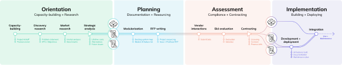
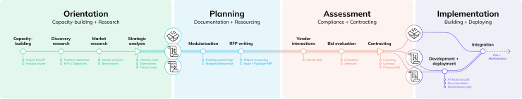

Purchase existing
Get software off the shelf


We believe that software can serve the public better! This document is a guide to help you, a public sector employee, source the best possible software. It walks through government contracting step-by-step, aligning legitimate public procurement with the cutting-edge best practices of software development. It is not an inflexible set of mandatory steps. Rather, it introduces fundamental concepts at each stage of a procurement, provides guidelines and best practices, and offers links to additional resources if you would like to read more.
Who should use this process code for software procurement?
How to use this process code.
Within each phase there are number of steps. As you click through the course, each step is a page. On that page, you’ll find key challenges, knowledge content, suggested actions, and takeaways, as well as references and additional reading. In some cases, the actons on a page culminate in a decision – you’ll choose to progress down one path or another.
Get software off the shelf


Contract a vendor to adapt open source software


Contract a vendor to build software


Build software (or adapt OSS) in-house


Who should use this process code for software procurement?
How to use this process code
Within each phase there are number of steps. Each step contains key challenges, knowledge content, suggested actions, and takeaways, as well as references and additional reading. In some cases, the suggested actions culminate in you choosing to progress down one path or another.
Get software off the shelf


Contract a vendor to adapt open source software


Contract a vendor to build software

Build software (or adapt OSS) in-house